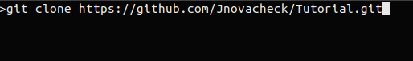
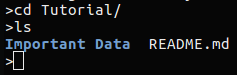

How to fork, clone, edit, commit and push with Github & Linux
for Cornell College's Computer Science Department.
Github: Fork and Clone
Hover over and underlined text, to see a definition of the word
Finding the correct repository
- Go to Github.com
- Create an account or log on to an existing account
- In the search bar type in the name of the repository
- The name of the repository will be given to you by your professor
Forking
- On the repository page click on the fork button
- This adds a copy of the repository to your git hub account

To create a second copy on your computer you will need to use a terminal window, but first you need to select your on-line repository.
- On your account's fork of the repository click on the large green Clone or Download button
- You will know it's your copy because your user-name will appear in the upper left corner of the screen followed by the name of the repository you are going to copy
- Copy the link provided in the text box, this can be done easily by clicking on the clipboard icon
- Make sure that you are cloning with HTTPS

Your repository is now ready to be downloaded to your computer
- Open a terminal window
- In the terminal window enter the command git clone then paste (using right click) the link from Github, your terminal window should have a similar command in it to the one in the image bellow
- Press enter to submit the command
- You will see the status of the download appear after hitting enter
- You now have a local copy of the repository

Creating and Editing a file
To edit the contents of the repository you can use the terminal window.
Creating a file
- Change the directory you are in using the cd command in a terminal window. Simply type the name of the directory after the cd command.
- For this turtorial enter the command cd Tutorial
- Press enter to submit the command
- Type the command ls to list all the files in the in the repository
- Here you can see that the folders within the repository are in blue and the documents are in white

Creating a new file
We are going to create a new file in the repository
- To do this type in the name of a text editor and then the name of the file you want to make, the file name can't already exist in the folder
- There are two main text editors on the machines emacs and gedit
- Which one you use in up to you, but gedit is simpler to use
- In the Terminal window enter the command gedit Hello.txt
- This creates a file with the name Hello.txt and opens the gedit text editor to edit the file
- If you want to use emacs enter the command emacs Hello.txt
- In the text editor type Hello and introduce yourself, then save and close the editor
- You can't enter commands in the Terminal window while the text editor is open
Editing an existing file
We are now going to edit a file in the repository
- To edit a file you need you type in the name of a text followed by the name of the file you want to open
- Type in the name of a text editor followed by the name of the file, in this case index.html
- For gedit the command is gedit index.html
- For emacs the command is emacs index.html

- In the text editor change the names of the professors so that the name of the professor matches the photo of them
- Read the comments in the document for a hint or two
- html comment start with !-- in the tag
- Remember to save and close the text editor
- To test your edits enter the command firefox Index.html
- This command opens the html in the Firefox web browser
- You can then click on the links to view the photos you rearranged
Commit and Push
You have successfully added a file and updated a file in the repository. The change however was only made to your local copy and not on your Github copy or on the Github master. We are going to fix that now.
- Back in a Terminal window, set the directory to your local copy of the repository
- Open and a new window and type the command cd Tutorial
- We should get the status of the repository before we continue, enter the command git status. You will see all the files that you created or edited in red
- We need to add the files you created or edited to the list of files we will commit, enter the command git add Hello.txt and git add Index.html
- Enter the command git status to see the files that you added in green
- You can pick and chose which files you edited to commit
- Enter the command git rm Index.html to remove the index file from the commit
- Enter the command git status to see that Index.html is red and will not be committed
Now we are going to commit your changes
- Enter the command git commit -m "Created a new Hello file" and hit enter
- git commit is the command that updates the repository, but the commit needs a message to go with the commit
- If you forget the -m "message here" part of the command you will be promoted to enter a message on the next screen
- -m "Created a new Hello file" is the message that will tell the owner of the master repository what you did, always make this message short and informative
Now you have committed the files locally, there is one last step before your Github copy of the repository matches the data that you added. That step is a push, where you push the data from your local machine to Github.
- Enter the command git push
- Enter the email address that you used to create you github account
- Enter the password you used to create your github account
- Your password will not appear in the terminal window
- After you hit enter the status of the push will appear in the terminal
- You can now check your github account to make sure that the information was push to your account.
You can now download and edit any of the repositories that you need to and then update those changes on Github.